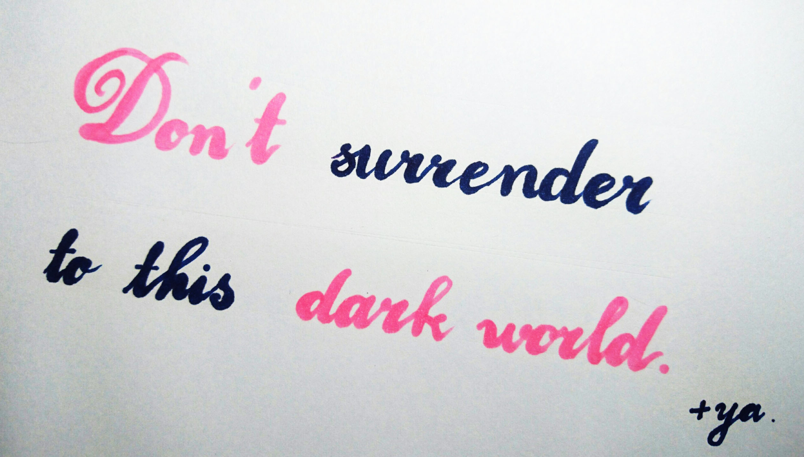
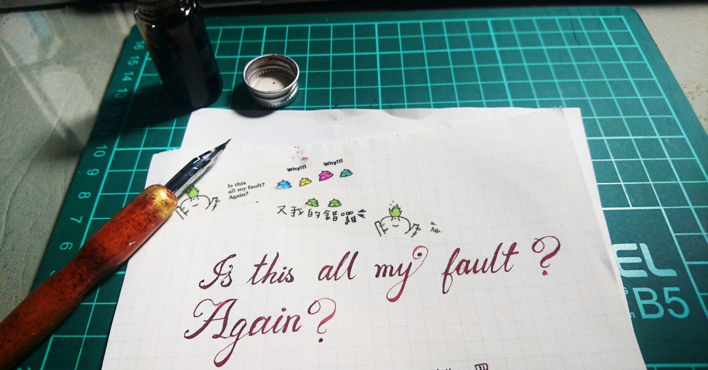
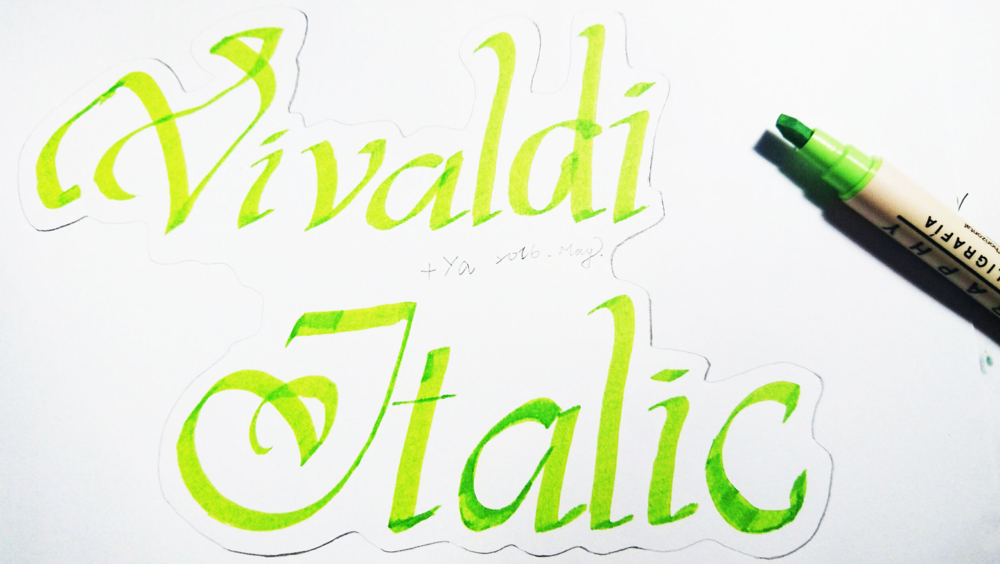
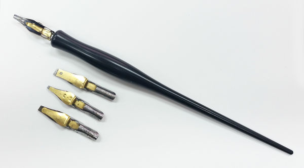

關於沾水筆
沾水筆、又稱蘸水筆，是一種書寫或繪畫專用的勾線筆，是用筆尖沾上墨水然後書寫或繪畫，可畫出且具變化的線條。因為較之鋼筆（自來水筆）可低成本製造，20世紀90年代之前非常流行用於書寫。尤其是提供公眾書寫工具的場合，如銀行和郵局；以及固定使用場合，如辦公室和醫院。
沾水筆，顧名思義就是要沾墨水才能寫字的筆。
我們能夠利用沾水筆寫出漂亮優美的銅板體、義大利體、歌德體......等等。
當然、不只有沾水筆能夠寫出上述字體，麥克筆、平尖鋼筆、甚至鉛筆原子筆都能夠寫出漂亮的字體。
筆尖
沾水筆分很多種，首先要介紹的就是筆尖：
- G筆尖：能夠畫出豐富的線條，又分為軟G和硬G，常常用來繪製主線。
- D筆尖：又稱為匙筆尖，可以用來畫效果線，適合筆壓大的人。
- 圓筆尖：用來細部，筆尖小，線條細。
- 學生筆尖：用來繪製背景或是沒有生命的東西，適合筆壓大的人。
- 書寫筆尖：用於書寫，最常見的款式一頭是不鏽鋼筆尖，另一頭是塑料，不用時可以反過來將筆尖插入筆桿便於收藏和運輸。
筆桿
筆桿大致分兩種，一種是兩用筆桿，一種是單用筆桿
- 兩用筆桿：因為圓筆尖大小和其他三種筆尖不同(較小)，所以兩用筆桿可以裝所有筆尖
- 單用筆桿：就分為圓筆尖以及其他筆尖專用的筆桿。
使用墨水
沾水筆必須沾墨，才能畫出黑線條，墨水也分成幾種：
- 製圖墨水：不防水，但是顏色黑，且便宜。
- 耐水性墨水：防水，但是較稀，也比製圖墨水貴。
- 蟲膠墨水：較貴。
- 毛筆墨：便宜好找經濟實惠，CP值高。